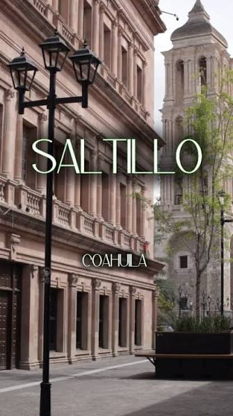

Fiesta Nuevas Emociones
Preparate para la noche del , en Zona Centro, Saltillo.
Ven a vivir una noche donde cada historia te hará cuestionar todo lo que crees conocer..Mas info en: Hablemos de lo que no existe

Saltillo es la capital y ciudad más poblada del estado mexicano de Coahuila de Zaragoza, además de ser la cabecera del Municipio de Saltillo. Su población estimada en 2026 es de 973.048 habitantes en su zona urbana. Mientras que en su zona industrial alcanza los 1.081.000 habitantes.
Es famosa por ser la capital de Coahuila, además de ser un gran centro de la industria automotriz y una tierra con gran riqueza cultural y paleontológica.
Saltillo es la ciudad más competitiva de todo México, a su vez se encuentra entre las 10 ciudades con mejor calidad de vida en el país.
Se localiza a más de 430km de la frontera con Texas, Estados Unidos. A su vez, a unos 842km de la Ciudad de México.
Saltillo se distingue por su entorno natural, rodeada por la Sierra Madre Oriental con paisajes de montaña y un clima fresco poco común en el norte de México.
Su centro histórico colonial, con calles empedradas y la imponente Catedral de Santiago, se combina con una fuerte tradición artesanal representada en el famoso sarape de Saltillo, además de contar con el Museo del Desierto, uno de los más grandes de Latinoamérica.
Esta seria una breve lista de las actividades que puedes realizar al visitarnos:
Saltillo combina historia, cultura y naturaleza en un solo lugar. Su casco colonial, su clima templado (poco común en el norte de México) y su fuerte identidad artesanal la convierten en un destino distinto al resto de las ciudades de la región, ideal para quienes buscan turismo cultural sin dejar de lado la buena gastronomía.
Preparate para la noche del , en Zona Centro, Saltillo.
Ven a vivir una noche donde cada historia te hará cuestionar todo lo que crees conocer..Mas info en: Hablemos de lo que no existe
Desde el hasta el 25 de Septiembre, ven a disfrutar una tarde-noche de música y baile en el corazón de la ciudad!!
Mas info en: Viernes de danzón
Gracias por visitar el sitio, espero hayas encontrado información interesante. Cada semana se actualizará con más información.